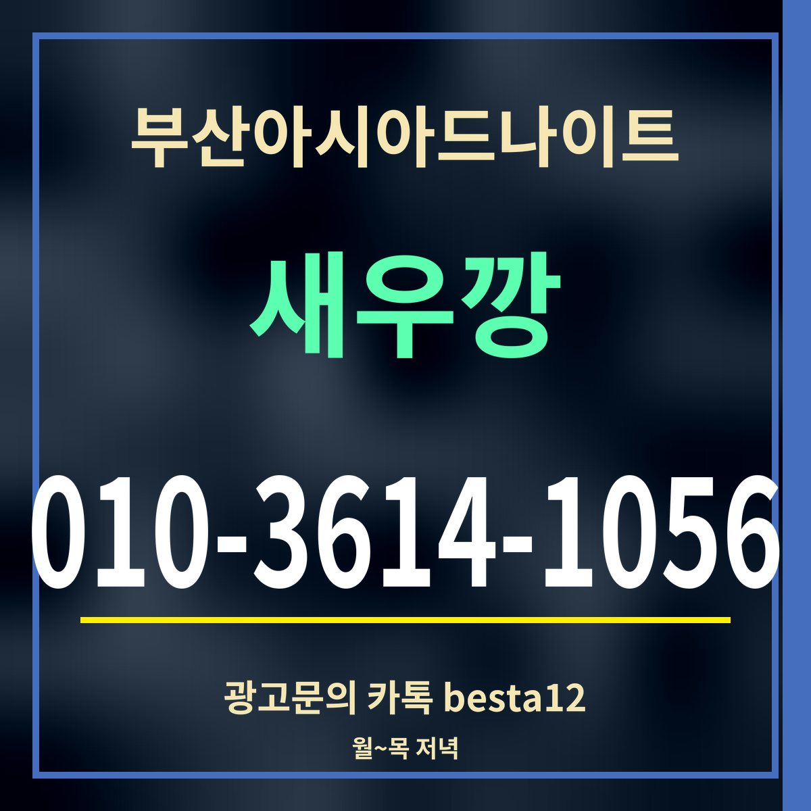

광고19세 미만 출입 금지
부산아시아드나이트 평일에 가면, 월~목 저녁 요일별 비교
평일 값: 카카오맵 방문 지표 19~23시 칸의 합(2026-09-27 갱신)

핵심 3줄: 저녁 7~11시 합은 월요일 7,119로 가장 낮고 목요일 11,092로 가장 높습니다. 목요일은 밤 9시(3,471)에 평일 가운데 가장 높은 칸을 찍습니다. 월요일이 조금 낮고 화·수요일은 비슷합니다.
요일별 저녁 합과 밤 9시
| 요일 | 19시 | 21시 | 저녁 합 |
|---|---|---|---|
| 월 | 751 | 2,190 | 7,119 |
| 화 | 783 | 2,098 | 8,718 |
| 수 | 662 | 2,152 | 8,397 |
| 목 | 856 | 3,471 | 11,092 |
평일을 고르는 법
월요일이 가장 조용하고, 화·수요일도 목요일보다는 여유롭습니다. 목요일은 주말을 앞두고 밤 9시부터 눈에 띄게 올라가, 주말 분위기에 조금 가까워집니다.
평일에는 다음 날 일정이 있는 경우가 많으니 돌아갈 방법과 시각을 먼저 정해 두세요. 1호선 온천장역까지는 걸어서 10분쯤입니다. 공휴일 앞날처럼 평소와 다른 날은 표의 흐름과 다를 수 있습니다.
부산아시아드나이트는 평일에도 저녁 7시에 문을 엽니다. 월요일부터 토요일까지 같은 시간이고, 일요일만 쉽니다.
이른 시각은 평일 모두 조용
저녁 7시 값은 월 751 · 화 783 · 수 662 · 목 856으로 평일 네 요일 모두 1,000 아래입니다. 요일 차이는 밤 9시에 벌어져, 월요일 2,190과 목요일 3,471의 차이가 납니다. 한산한 분위기를 원한다면 요일보다 시각을 먼저 고르는 편이 효과가 큽니다.
자주 묻는 것
평일 중 가장 조용한 날은요?
저녁 7~11시 합으로 월요일이 7,119로 가장 낮습니다.
저녁 7~11시 합으로 월요일이 7,119로 가장 낮습니다.
목요일은 어떤가요?
목요일 저녁 합은 11,092로 평일 가운데 가장 높습니다.
목요일 저녁 합은 11,092로 평일 가운데 가장 높습니다.
평일에도 여나요?
월~토 저녁 7시에 열고 일요일만 쉽니다.
월~토 저녁 7시에 열고 일요일만 쉽니다.
한 줄 정리: 부산아시아드나이트 평일은 월~수요일이 비슷하게 한산하고, 목요일이 가장 높습니다.
주말은 금요일과 토요일 비교를 보세요.
이 페이지는 광고이며, 업소 제공 정보를 받아 실었습니다(담당 새우깡). 확인일 2026-09-27.